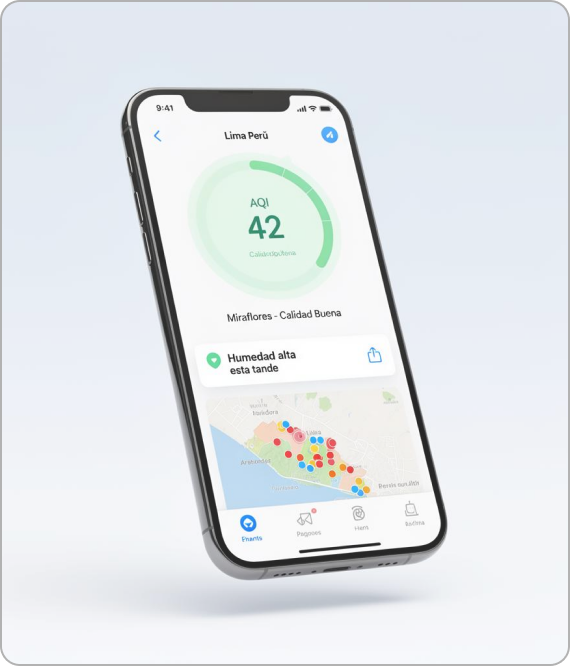

La primera app diseñada para limeños con problemas respiratorios: asma, bronquitis, EPOC, alergias y sensibilidad pulmonar. Anticípate a la humedad, la neblina y la contaminación de tu distrito.

Datos hiperlocales actualizados cada 15 minutos desde estaciones de monitoreo en toda la ciudad. ACTUALIZADO HACE 2 MIN
AQI • Buena
AQI • Buena
AQI • Buena
AQI • Mala
AQI • Buena
AQI • Buena
AQI • Buena
AQI • Mala
Analizamos los parámetros específicos de la costa limeña que más afectan a personas con condiciones respiratorias.
Lima supera el 90% de humedad casi a diario. Te avisamos cuándo encender el deshumidificador o evitar caminar al aire libre.
Monitoreo en tiempo real de PM2.5 y PM10 en distritos con alta congestión: SJL, Carabayllo, Cercado, Ate y VMT.
Notificaciones inteligentes antes de que las condiciones empeoren, para que prepares tu inhalador y planifiques el día.
Surco, Lima
San Isidro, Lima
Miraflores, Lima
Comas, Lima
Chorrillos, Lima
Carabayllo, Lima
Si tracking a una persona mayor, a un niño con asma o bronquitis, a un familiar con EPOC o alguien con alergias respiratorias, AirAlert te permite vincular cuentas y recibir alertas cuando las condiciones de su zona empeoren.
Configurarlo toma menos de dos minutos.
Indica tu condición respiratoria (asma, bronquitis, EPOC, alergias u otras) y los distritos que frecuentas en Lima.
Te notificamos cuando la calidad del aire o la humedad puedan afectarte, antes de que salgas.
Recomendaciones claras: salir, postergar o usar mascarilla. Compártelas con tus cuidadores.